Complete Function Reference with Examples
Source:vignettes/complete-reference.Rmd
complete-reference.Rmdbayesiansurprise: Complete Reference
This vignette demonstrates all major functions in the
bayesiansurprise package with working examples and
visualizations.
1. Core Surprise Computation
1.1 surprise() - Main Function
The primary function for computing Bayesian surprise on data frames and sf objects.
# Load NC SIDS data
nc <- st_read(system.file("shape/nc.shp", package = "sf"), quiet = TRUE)
# Compute surprise with default models (uniform, baserate, funnel)
result <- surprise(nc, observed = SID74, expected = BIR74)
# View structure
print(result)
#> Bayesian Surprise Map
#> =====================
#> Models: 3
#> Surprise range: 0.0334 to 0.6008
#> Signed surprise range: -0.5834 to 0.6008
#>
#> Simple feature collection with 100 features and 16 fields
#> Geometry type: MULTIPOLYGON
#> Dimension: XY
#> Bounding box: xmin: -84.32385 ymin: 33.88199 xmax: -75.45698 ymax: 36.58965
#> Geodetic CRS: NAD27
#> First 10 features:
#> AREA PERIMETER CNTY_ CNTY_ID NAME FIPS FIPSNO CRESS_ID BIR74 SID74
#> 1 0.114 1.442 1825 1825 Ashe 37009 37009 5 1091 1
#> 2 0.061 1.231 1827 1827 Alleghany 37005 37005 3 487 0
#> 3 0.143 1.630 1828 1828 Surry 37171 37171 86 3188 5
#> 4 0.070 2.968 1831 1831 Currituck 37053 37053 27 508 1
#> 5 0.153 2.206 1832 1832 Northampton 37131 37131 66 1421 9
#> 6 0.097 1.670 1833 1833 Hertford 37091 37091 46 1452 7
#> 7 0.062 1.547 1834 1834 Camden 37029 37029 15 286 0
#> 8 0.091 1.284 1835 1835 Gates 37073 37073 37 420 0
#> 9 0.118 1.421 1836 1836 Warren 37185 37185 93 968 4
#> 10 0.124 1.428 1837 1837 Stokes 37169 37169 85 1612 1
#> NWBIR74 BIR79 SID79 NWBIR79 geometry surprise
#> 1 10 1364 0 19 MULTIPOLYGON (((-81.47276 3... 0.19528584
#> 2 10 542 3 12 MULTIPOLYGON (((-81.23989 3... 0.11076159
#> 3 208 3616 6 260 MULTIPOLYGON (((-80.45634 3... 0.29096840
#> 4 123 830 2 145 MULTIPOLYGON (((-76.00897 3... 0.11714867
#> 5 1066 1606 3 1197 MULTIPOLYGON (((-77.21767 3... 0.57773733
#> 6 954 1838 5 1237 MULTIPOLYGON (((-76.74506 3... 0.51437420
#> 7 115 350 2 139 MULTIPOLYGON (((-76.00897 3... 0.04355317
#> 8 254 594 2 371 MULTIPOLYGON (((-76.56251 3... 0.08634903
#> 9 748 1190 2 844 MULTIPOLYGON (((-78.30876 3... 0.37427103
#> 10 160 2038 5 176 MULTIPOLYGON (((-80.02567 3... 0.31685289
#> signed_surprise
#> 1 -0.19528584
#> 2 -0.11076159
#> 3 -0.29096840
#> 4 -0.11714867
#> 5 0.57773733
#> 6 0.51437420
#> 7 -0.04355317
#> 8 -0.08634903
#> 9 0.37427103
#> 10 -0.31685289
# Visualize the result
ggplot(result) +
geom_sf(aes(fill = signed_surprise)) +
scale_fill_surprise_diverging() +
labs(
title = "Bayesian Surprise: NC SIDS Cases (1974)",
subtitle = "Blue = fewer than expected, Red = more than expected",
fill = "Signed\nSurprise"
) +
theme_minimal()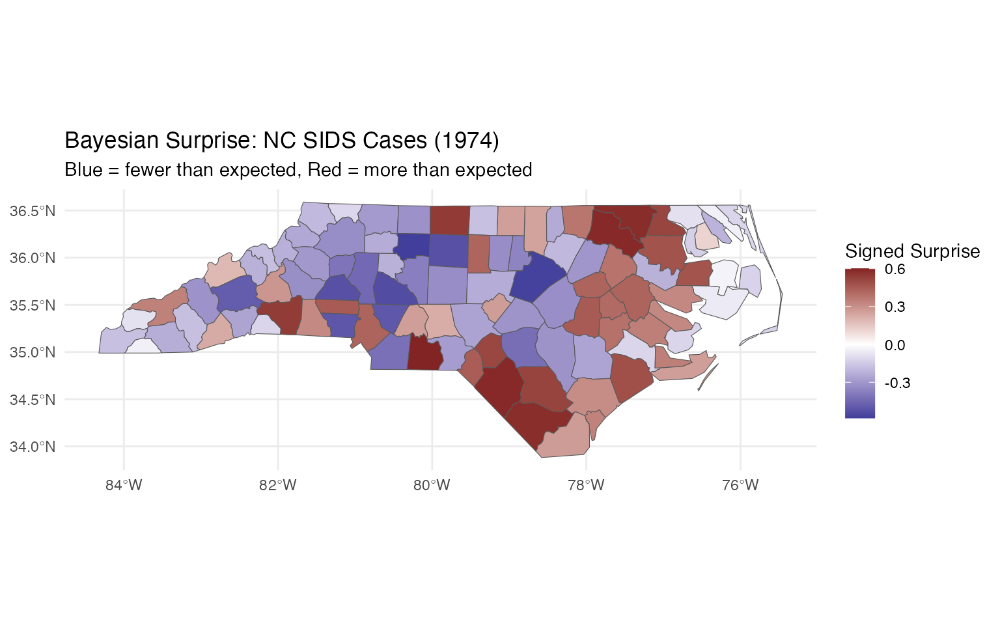
1.2 auto_surprise() - Simple Vector API
For quick analysis without a data frame:
# Observed counts and expected values
observed <- c(50, 100, 150, 200, 75, 300, 25)
expected <- c(10000, 50000, 100000, 25000, 15000, 80000, 5000)
result_auto <- auto_surprise(observed, expected)
# View surprise values
cat("Surprise values:\n")
#> Surprise values:
print(round(result_auto$surprise, 4))
#> [1] 0.5817 0.6163 0.6948 0.6256 0.5852 0.5850 0.5507
cat("\nSigned surprise:\n")
#>
#> Signed surprise:
print(round(result_auto$signed_surprise, 4))
#> [1] 0.5817 -0.6163 -0.6948 0.6256 0.5852 0.5850 0.5507
# Visualize
df <- data.frame(
region = LETTERS[1:7],
observed = observed,
expected = expected,
surprise = result_auto$surprise,
signed = result_auto$signed_surprise
)
ggplot(df, aes(x = reorder(region, -surprise), y = surprise, fill = signed)) +
geom_col() +
scale_fill_gradient2(low = "#2166AC", mid = "white", high = "#B2182B", midpoint = 0) +
labs(
title = "Surprise by Region",
x = "Region", y = "Surprise (bits)",
fill = "Direction"
) +
theme_minimal()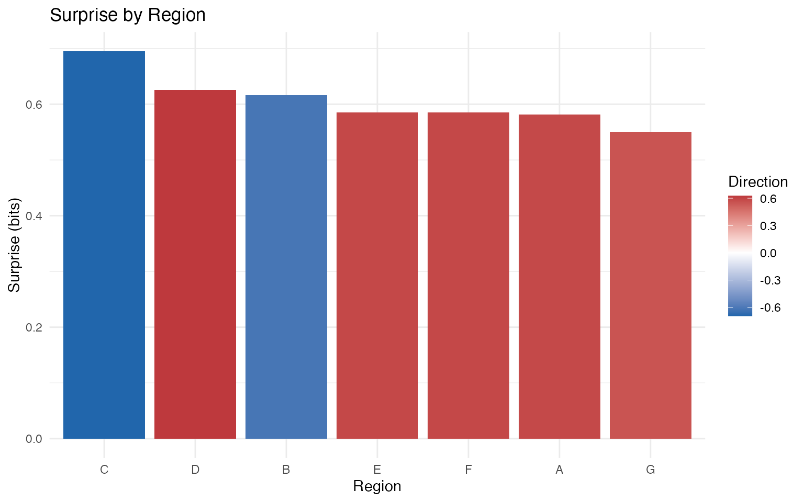
1.3 compute_surprise() - Low-Level Function
Direct computation with a model space:
# Build a model space
mspace <- model_space(
bs_model_uniform(),
bs_model_baserate(nc$BIR74),
bs_model_funnel(nc$BIR74)
)
# Compute surprise directly
result_low <- compute_surprise(
model_space = mspace,
observed = nc$SID74,
expected = nc$BIR74,
return_signed = TRUE
)
cat("Computed", length(result_low$surprise), "surprise values\n")
#> Computed 100 surprise values
cat("Range:", round(range(result_low$surprise), 4), "\n")
#> Range: 0.0334 0.60082. Model Types
2.1 bs_model_uniform() - Uniform Distribution
Assumes all observations equally likely:
model_uniform <- bs_model_uniform()
print(model_uniform)
#> <bs_model: uniform >
#> Name: Uniform
#> Parameters:
#> n_regions :2.2 bs_model_baserate() - Base Rate Model
Expects observations proportional to baseline:
model_baserate <- bs_model_baserate(nc$BIR74)
print(model_baserate)
#> <bs_model: baserate >
#> Name: Base Rate
#> Parameters:
#> expected : [ 100 values]
#> expected_prop : [ 100 values]
#> normalize : TRUE2.3 bs_model_gaussian() - Normal Distribution
# Fit from data (default)
model_gaussian_fit <- bs_model_gaussian()
print(model_gaussian_fit)
#> <bs_model: gaussian >
#> Name: Gaussian
#> Parameters:
#> mu :
#> sigma :
#> fit_from_data : TRUE
# Fixed parameters
model_gaussian_fixed <- bs_model_gaussian(mu = 100, sigma = 20, fit_from_data = FALSE)
print(model_gaussian_fixed)
#> <bs_model: gaussian >
#> Name: Gaussian
#> Parameters:
#> mu : 100
#> sigma : 20
#> fit_from_data : FALSE2.4 bs_model_sampled() - KDE Model
Uses kernel density estimation:
model_kde <- bs_model_sampled(sample_frac = 0.2, kernel = "gaussian")
print(model_kde)
#> <bs_model: sampled >
#> Name: Sampled (KDE)
#> Parameters:
#> sample_frac : 0.2
#> kernel : gaussian
#> bandwidth : nrd0
#> sample_indices :2.5 bs_model_funnel() - de Moivre Funnel
Accounts for sampling variance:
model_funnel <- bs_model_funnel(nc$BIR74, type = "count")
print(model_funnel)
#> <bs_model: funnel >
#> Name: de Moivre Funnel (paper)
#> Parameters:
#> sample_size : [ 100 values]
#> target_rate :
#> type : count
#> formula : paper
#> control_limits : 2, 32.6 bs_model_bootstrap() - Bootstrap Model
model_boot <- bs_model_bootstrap(n_bootstrap = 100)
print(model_boot)
#> <bs_model: bootstrap >
#> Name: Bootstrap (n=100)
#> Parameters:
#> n_bootstrap : 100
#> seed :2.7 bs_model_gaussian_mixture() - Mixture Model
# Define a two-component mixture
model_mix <- bs_model_gaussian_mixture(
means = c(50, 150),
sds = c(10, 20),
weights = c(0.6, 0.4)
)
print(model_mix)
#> <bs_model: gaussian_mixture >
#> Name: Gaussian Mixture (k=2)
#> Parameters:
#> means : 50, 150
#> sds : 10, 20
#> weights : 0.6, 0.4
#> k : 23. Model Space Operations
3.1 model_space() - Create Model Space
space <- model_space(
bs_model_uniform(),
bs_model_baserate(nc$BIR74),
bs_model_funnel(nc$BIR74),
prior = c(0.2, 0.5, 0.3),
names = c("Uniform", "Population", "Funnel")
)
print(space)
#> <bs_model_space>
#> Models: 3
#> 1. Uniform (prior: 0.2)
#> 2. Population (prior: 0.5)
#> 3. Funnel (prior: 0.3)3.2 default_model_space() - Quick Default
default_space <- default_model_space(nc$BIR74)
print(default_space)
#> <bs_model_space>
#> Models: 3
#> 1. Uniform (prior: 0.3333)
#> 2. Base Rate (prior: 0.3333)
#> 3. de Moivre Funnel (paper) (prior: 0.3333)3.3 Model Space Manipulation
# Add a model
space_expanded <- add_model(space, bs_model_gaussian())
cat("After add_model:", n_models(space_expanded), "models\n")
#> After add_model: 4 models
cat("Model names:", model_names(space_expanded), "\n")
#> Model names: Uniform Base Rate de Moivre Funnel (paper) Gaussian
# Remove a model (by index)
space_reduced <- remove_model(space_expanded, 4)
cat("After remove_model:", n_models(space_reduced), "models\n")
#> After remove_model: 3 models
# Set new prior
space_reweighted <- set_prior(space, c(0.1, 0.6, 0.3))
cat("New prior:", space_reweighted$prior, "\n")
#> New prior: 0.1 0.6 0.3
# Get model names
cat("Model names:", model_names(space), "\n")
#> Model names: Uniform Population Funnel3.4 bayesian_update() - Update Posterior
# Update model space with observed data
updated_space <- bayesian_update(space, nc$SID74)
cat("Prior: ", round(space$prior, 4), "\n")
#> Prior: 0.2 0.5 0.3
cat("Posterior:", round(updated_space$posterior, 4), "\n")
#> Posterior: 0.231 0.763 0.006
# Visualize prior vs posterior
plot(updated_space)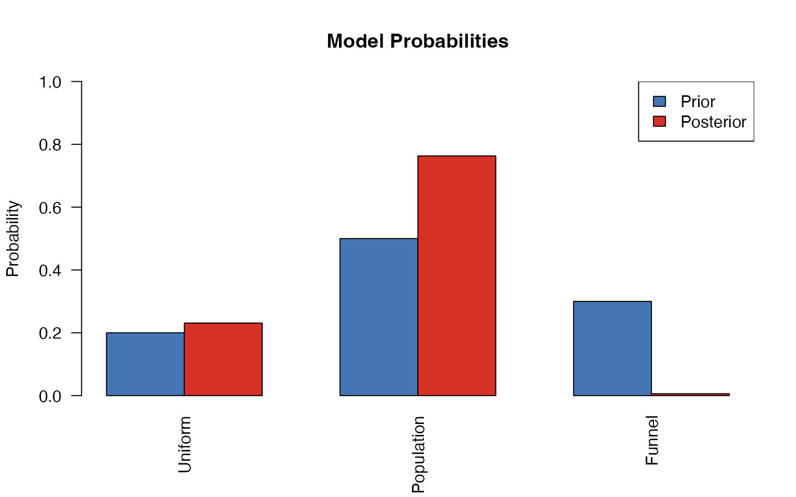
3.5 cumulative_bayesian_update() - Sequential Updates
space_simple <- model_space(bs_model_uniform(), bs_model_gaussian())
# Sequential observations (processed one at a time)
observations <- c(10, 15, 20, 25, 100, 30, 35, 40)
cum_result <- cumulative_bayesian_update(space_simple, observations)
cat("Observations processed:", length(cum_result$cumulative_surprise), "\n")
#> Observations processed: 8
cat("Final posterior:", round(cum_result$final_space$posterior, 4), "\n")
#> Final posterior: 1 04. Accessor Functions
4.1 get_surprise() and get_model_space()
result <- surprise(nc, observed = SID74, expected = BIR74)
# Get surprise values
surprise_vals <- get_surprise(result, "surprise")
signed_vals <- get_surprise(result, "signed")
cat("First 5 surprise values:", round(surprise_vals[1:5], 4), "\n")
#> First 5 surprise values: 0.1953 0.1108 0.291 0.1171 0.5777
cat("First 5 signed values:", round(signed_vals[1:5], 4), "\n")
#> First 5 signed values: -0.1953 -0.1108 -0.291 -0.1171 0.5777
# Get model space
mspace <- get_model_space(result)
print(mspace)
#> <bs_model_space>
#> Models: 3
#> 1. Uniform (prior: 0.3333)
#> 2. Base Rate (prior: 0.3333)
#> 3. de Moivre Funnel (paper) (prior: 0.3333)5. Temporal and Streaming Analysis
5.1 surprise_temporal() - Panel Data
# Create panel data
set.seed(42)
panel_data <- data.frame(
year = rep(2018:2022, each = 4),
region = rep(c("North", "South", "East", "West"), 5),
cases = c(45, 80, 55, 70, # 2018
50, 85, 60, 65, # 2019
48, 90, 58, 72, # 2020
55, 95, 52, 68, # 2021
60, 100, 65, 75), # 2022
population = rep(c(10000, 20000, 15000, 18000), 5)
)
temporal_result <- surprise_temporal(
panel_data,
time_col = year,
observed = cases,
expected = population,
region_col = region
)
print(temporal_result)
#> <bs_surprise_temporal>
#> Time periods: 5
#> Time range: 2018 to 2022
#> Models: 3
# Plot temporal evolution
plot(temporal_result, type = "time_series")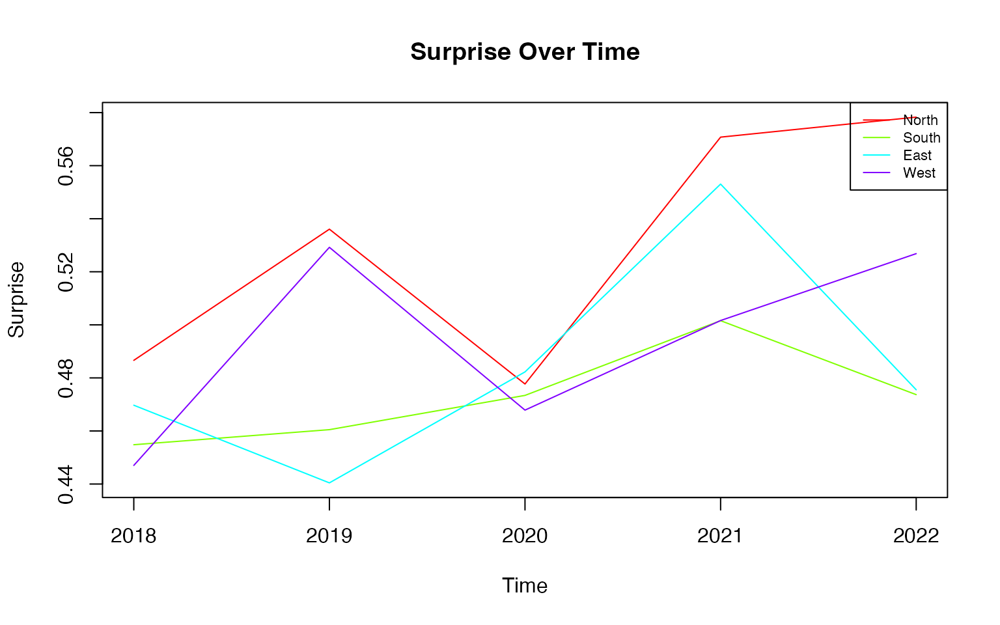
# Heatmap view
plot(temporal_result, type = "heatmap")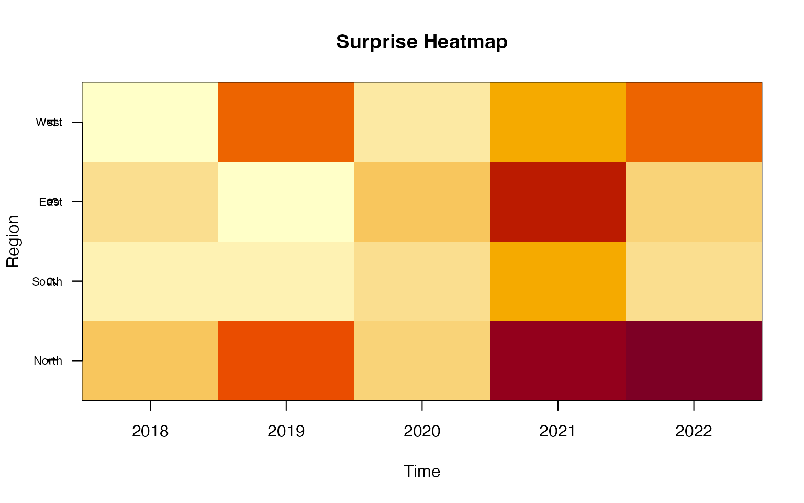
5.2 update_surprise() - Streaming Updates
# Initial computation
initial <- auto_surprise(c(50, 100, 75), c(10000, 20000, 15000))
cat("Initial surprise:", round(initial$surprise, 4), "\n")
#> Initial surprise: 0.4312 0.4656 0.4523
# Stream new observations
updated <- update_surprise(initial,
new_observed = c(55, 110),
new_expected = c(11000, 22000))
cat("After update:", round(updated$surprise, 4), "\n")
#> After update: 0.4312 0.4656 0.4523 0.4364 0.46985.3 surprise_rolling() - Rolling Window
# Time series data
ts_data <- c(50, 52, 48, 55, 51, 120, 115, 125, 60, 58, 62, 55)
expected_ts <- rep(1000, length(ts_data))
rolling_result <- surprise_rolling(
ts_data,
expected = expected_ts,
window_size = 4,
step = 1
)
# Extract mean surprise per window
window_means <- sapply(rolling_result$windows, function(w) mean(w$result$surprise))
plot(seq_along(window_means), window_means, type = "b",
xlab = "Window Position", ylab = "Mean Surprise",
main = "Rolling Window Surprise", pch = 19)
abline(h = mean(window_means), lty = 2, col = "red")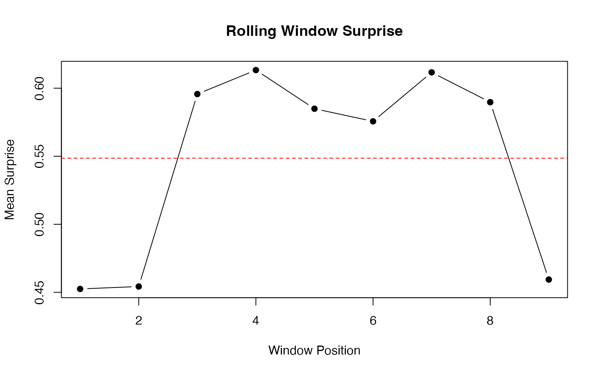
5.4 get_surprise_at_time() - Extract Time Slice
# Get surprise for specific year
surprise_2020 <- get_surprise_at_time(temporal_result, 2020)
cat("2020 surprise values:", round(surprise_2020$surprise, 4), "\n")
#> 2020 surprise values: 0.4777 0.4734 0.4823 0.46795.5 surprise_animate() - Animation-Ready Data
anim_data <- surprise_animate(temporal_result)
head(anim_data)
#> time surprise signed_surprise region
#> 1 2018 0.4866159 0.4866159 North
#> 2 2018 0.4548098 0.4548098 South
#> 3 2018 0.4697058 -0.4697058 East
#> 4 2018 0.4470164 -0.4470164 West
#> 5 2019 0.5360584 0.5360584 North
#> 6 2019 0.4604919 0.4604919 South6. Funnel Analysis Functions
6.1 compute_funnel_data()
funnel_df <- compute_funnel_data(
observed = nc$SID74,
sample_size = nc$BIR74,
type = "count",
limits = c(2, 3) # 2 and 3 SD limits
)
head(funnel_df)
#> observed sample_size expected se z_score lower_2sd upper_2sd
#> 1 1 1091 2.2053964 1.4850577 -0.8116832 -0.7647190 5.175512
#> 2 0 487 0.9844437 0.9921913 -0.9921913 -0.9999390 2.968826
#> 3 5 3188 6.4443663 2.5385756 -0.5689672 1.3672150 11.521518
#> 4 1 508 1.0268940 1.0133578 -0.0265395 -0.9998216 3.053610
#> 5 9 1421 2.8724732 1.6948372 3.6154073 -0.5172012 6.262148
#> 6 7 1452 2.9351380 1.7132244 2.3726384 -0.4913109 6.361587
#> lower_3sd upper_3sd
#> 1 -2.249777 6.660569
#> 2 -1.992130 3.961018
#> 3 -1.171361 14.060093
#> 4 -2.013179 4.066967
#> 5 -2.212038 7.956985
#> 6 -2.204535 8.074811
# Funnel plot - shows observed vs expected with control limits
ggplot(funnel_df, aes(x = sample_size, y = observed)) +
geom_ribbon(aes(ymin = lower_3sd, ymax = upper_3sd), fill = "gray90") +
geom_ribbon(aes(ymin = lower_2sd, ymax = upper_2sd), fill = "gray70") +
geom_line(aes(y = expected), linetype = "dashed") +
geom_point(aes(color = abs(z_score) > 2), size = 2) +
scale_color_manual(values = c("FALSE" = "black", "TRUE" = "red")) +
labs(
title = "Funnel Plot: NC SIDS Cases",
x = "Births (Sample Size)",
y = "Observed SIDS Cases",
color = "Outside 2 SD"
) +
theme_minimal()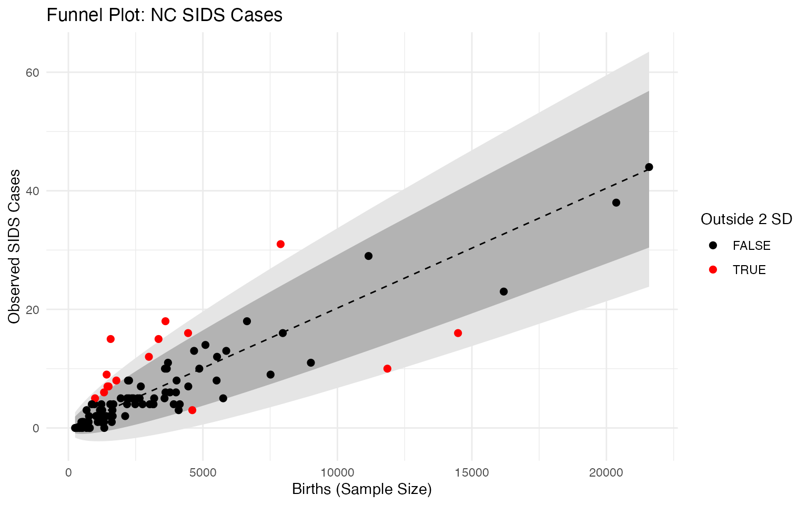
6.2 funnel_zscore() and funnel_pvalue()
# Compute z-scores (need observed, expected, and sample_size)
# For counts, expected is derived from overall rate
overall_rate <- sum(nc$SID74) / sum(nc$BIR74)
expected_cases <- nc$BIR74 * overall_rate
z_scores <- funnel_zscore(nc$SID74, expected_cases, nc$BIR74, type = "count")
cat("First 5 z-scores:", round(z_scores[1:5], 3), "\n")
#> First 5 z-scores: -0.812 -0.992 -0.569 -0.027 3.615
# Compute p-values from z-scores
p_vals <- funnel_pvalue(z_scores)
cat("First 5 p-values:", round(p_vals[1:5], 4), "\n")
#> First 5 p-values: 0.417 0.3211 0.5694 0.9788 3e-04
cat("Significant at 0.05:", sum(p_vals < 0.05, na.rm = TRUE), "counties\n")
#> Significant at 0.05: 15 counties7. Normalization Utilities
7.1 normalize_prob() - Probability Distribution
raw <- c(10, 20, 30, 40)
normalized <- normalize_prob(raw)
cat("Raw:", raw, "\n")
#> Raw: 10 20 30 40
cat("Normalized:", normalized, "(sum =", sum(normalized), ")\n")
#> Normalized: 0.1 0.2 0.3 0.4 (sum = 1 )7.2 normalize_rate() - Per-Capita Rates
counts <- c(50, 100, 150)
population <- c(10000, 50000, 100000)
rates <- normalize_rate(counts, population, per = 100000)
cat("Rates per 100k:", round(rates, 1), "\n")
#> Rates per 100k: 500 200 1507.3 normalize_zscore() - Z-Score
values <- c(10, 20, 30, 40, 50)
z <- normalize_zscore(values)
cat("Z-scores:", round(z, 3), "\n")
#> Z-scores: -1.265 -0.632 0 0.632 1.2657.4 normalize_minmax() - Min-Max Scaling
values <- c(10, 20, 30, 40, 50)
scaled <- normalize_minmax(values)
cat("Min-max scaled:", scaled, "\n")
#> Min-max scaled: 0 0.25 0.5 0.75 17.5 normalize_robust() - Robust Scaling
values <- c(10, 20, 30, 40, 500) # With outlier
robust <- normalize_robust(values)
cat("Robust scaled:", round(robust, 3), "\n")
#> Robust scaled: -0.005 0.02 0.045 0.071 1.2328. Mathematical Utilities
8.1 kl_divergence() - KL-Divergence
p <- c(0.25, 0.25, 0.25, 0.25) # Uniform
q <- c(0.1, 0.2, 0.3, 0.4) # Non-uniform
kl <- kl_divergence(p, q)
cat("KL(P || Q):", round(kl, 4), "bits\n")
#> KL(P || Q): 0.1757 bits8.2 log_sum_exp() - Numerically Stable
log_vals <- c(-1000, -1001, -1002) # Very small numbers
result <- log_sum_exp(log_vals)
cat("log_sum_exp:", round(result, 4), "\n")
#> log_sum_exp: -999.59249. ggplot2 Integration
9.1 Color Scales
Sequential Scale
result <- surprise(nc, observed = SID74, expected = BIR74)
ggplot(result) +
geom_sf(aes(fill = surprise)) +
scale_fill_surprise(option = "viridis") +
labs(title = "Sequential Scale (Viridis)") +
theme_minimal()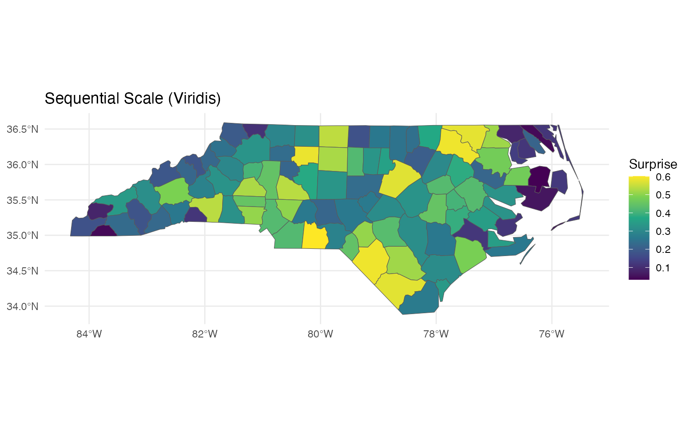
Diverging Scale
ggplot(result) +
geom_sf(aes(fill = signed_surprise)) +
scale_fill_surprise_diverging() +
labs(title = "Diverging Scale for Signed Surprise") +
theme_minimal()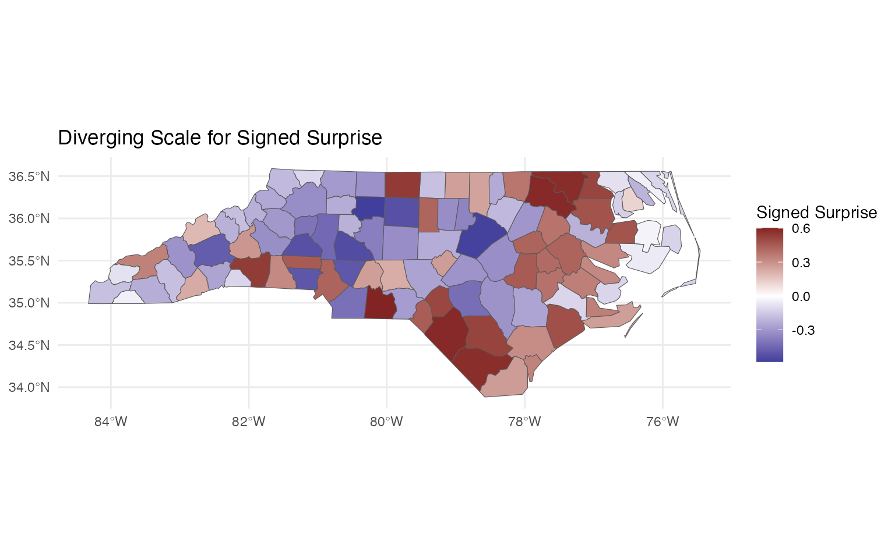
Binned Scale
ggplot(result) +
geom_sf(aes(fill = surprise)) +
scale_fill_surprise_binned(n.breaks = 5) +
labs(title = "Binned Scale (5 breaks)") +
theme_minimal()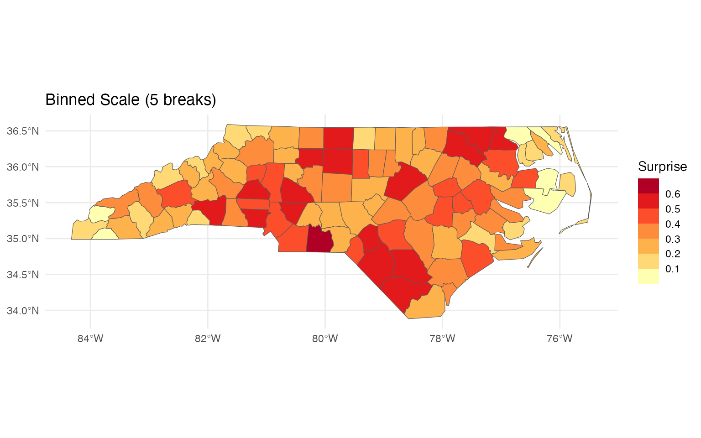
Diverging Binned Scale
ggplot(result) +
geom_sf(aes(fill = signed_surprise)) +
scale_fill_surprise_diverging_binned(n.breaks = 7) +
labs(title = "Diverging Binned Scale") +
theme_minimal()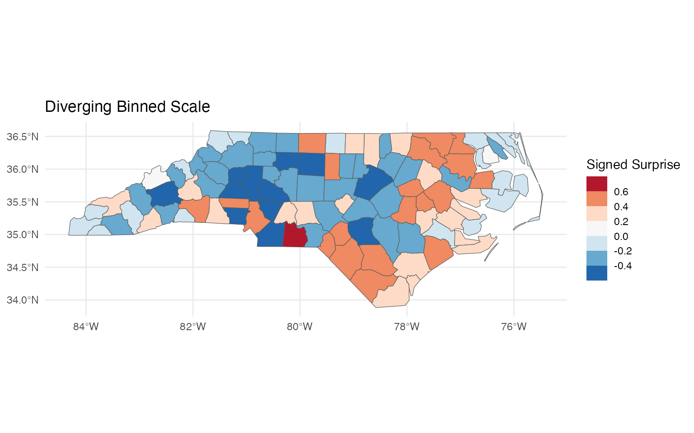
9.2 stat_surprise() - Compute in ggplot2
ggplot(nc) +
stat_surprise(aes(geometry = geometry, observed = SID74, expected = BIR74)) +
scale_fill_surprise_diverging() +
labs(title = "stat_surprise() Computes Inline") +
theme_minimal()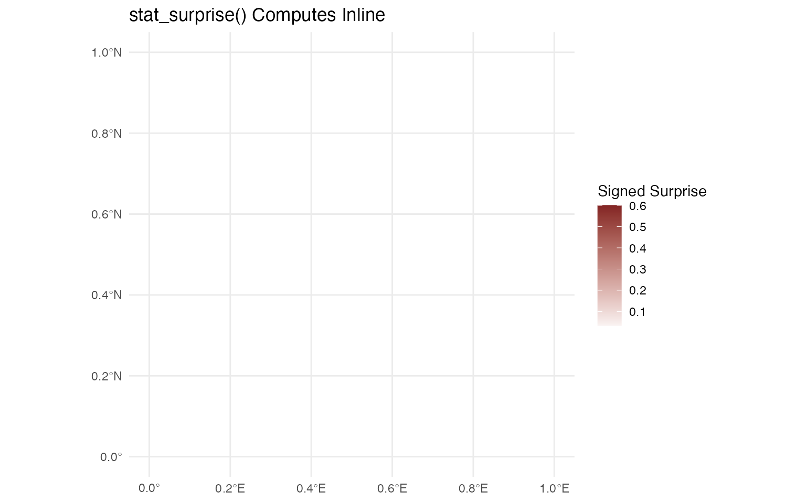
9.3 Histogram and Density Geoms
result <- surprise(nc, observed = SID74, expected = BIR74)
ggplot(result, aes(x = surprise)) +
geom_surprise_histogram(bins = 15) +
labs(title = "Distribution of Surprise Values") +
theme_minimal()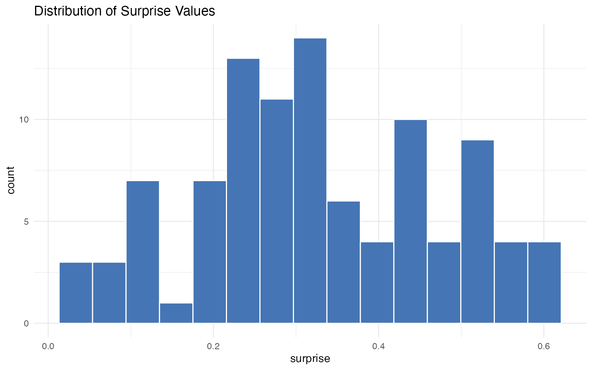
ggplot(result, aes(x = signed_surprise)) +
geom_surprise_density(fill = "#4575b4", alpha = 0.7) +
geom_vline(xintercept = 0, linetype = "dashed") +
labs(title = "Density of Signed Surprise") +
theme_minimal()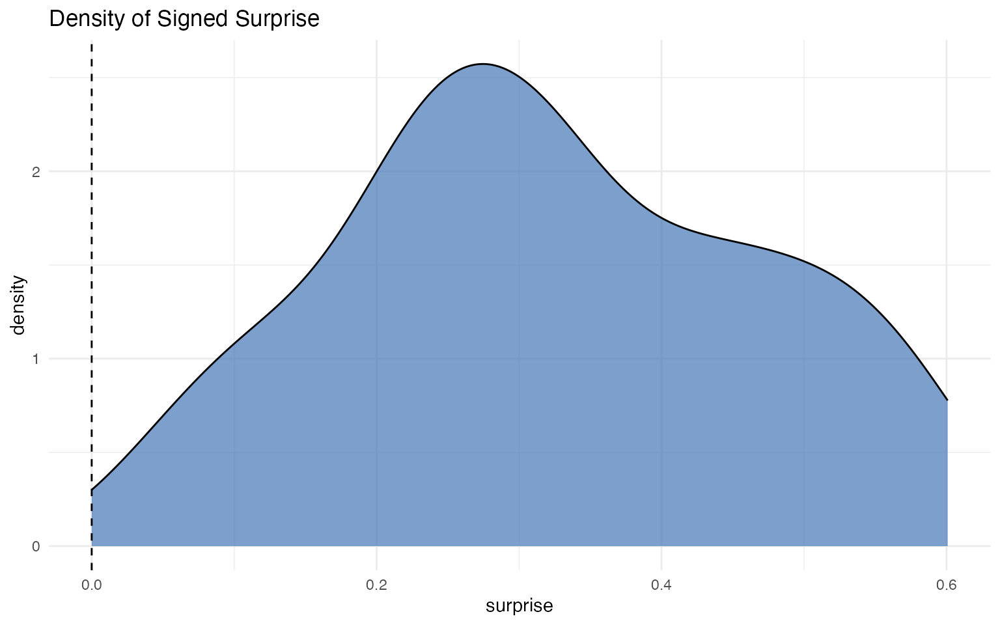
10. sf Spatial Functions
10.1 st_surprise() - Convenience Wrapper
result_sf <- st_surprise(nc, observed = SID74, expected = BIR74)
class(result_sf)
#> [1] "bs_surprise_sf" "sf" "data.frame"10.2 st_density() - Spatial KDE
# st_density computes kernel density estimation for point patterns
# Returns a list with density grid
nc_centroids <- st_centroid(nc)
density_result <- st_density(nc_centroids, bandwidth = 0.5)
cat("Density result structure:\n")
#> Density result structure:
cat("- x grid:", length(density_result$x), "values\n")
#> - x grid: 100 values
cat("- y grid:", length(density_result$y), "values\n")
#> - y grid: 100 values
cat("- z matrix:", dim(density_result$z)[1], "x", dim(density_result$z)[2], "\n")
#> - z matrix: 100 x 10010.3 st_aggregate_surprise() - Aggregate to Larger Regions
# Create larger regions to aggregate to
# Using a simple union of counties
nc_result <- surprise(nc, observed = SID74, expected = BIR74)
# Show surprise values from result
cat("Sample surprise values:\n")
#> Sample surprise values:
print(head(nc_result[, c("NAME", "surprise", "signed_surprise")], 5))
#> Simple feature collection with 5 features and 3 fields
#> Geometry type: MULTIPOLYGON
#> Dimension: XY
#> Bounding box: xmin: -81.74107 ymin: 36.07282 xmax: -75.77316 ymax: 36.58965
#> Geodetic CRS: NAD27
#> NAME surprise signed_surprise geometry
#> 1 Ashe 0.1952858 -0.1952858 MULTIPOLYGON (((-81.47276 3...
#> 2 Alleghany 0.1107616 -0.1107616 MULTIPOLYGON (((-81.23989 3...
#> 3 Surry 0.2909684 -0.2909684 MULTIPOLYGON (((-80.45634 3...
#> 4 Currituck 0.1171487 -0.1171487 MULTIPOLYGON (((-76.00897 3...
#> 5 Northampton 0.5777373 0.5777373 MULTIPOLYGON (((-77.21767 3...11. Base R Plot Methods
11.1 plot.bs_surprise_sf()
result <- surprise(nc, observed = SID74, expected = BIR74)
plot(result, which = "signed_surprise", main = "Base R Plot: Signed Surprise")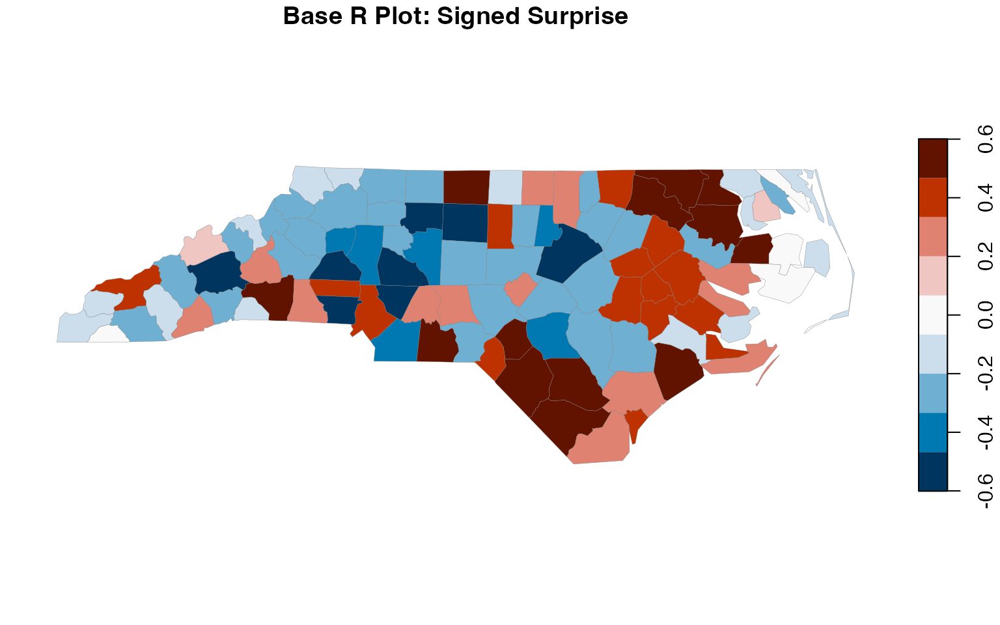
11.2 plot.bs_surprise()
auto_result <- auto_surprise(c(50, 100, 150, 200, 75), c(10000, 50000, 100000, 25000, 15000))
plot(auto_result, type = "histogram", main = "Surprise Distribution")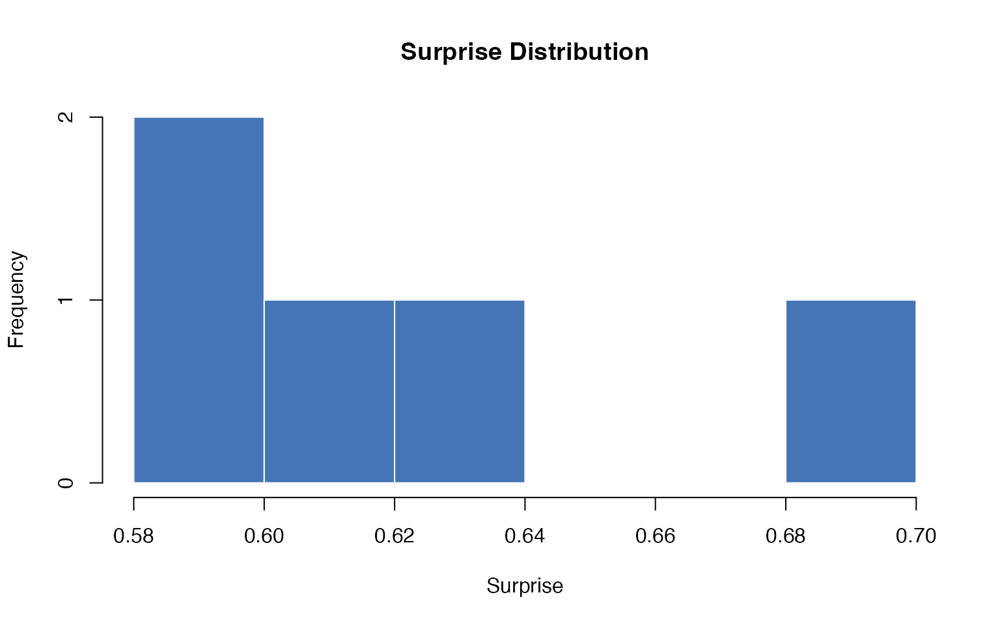
11.3 plot.bs_model_space()
space <- model_space(bs_model_uniform(), bs_model_baserate(nc$BIR74))
updated <- bayesian_update(space, nc$SID74)
plot(updated)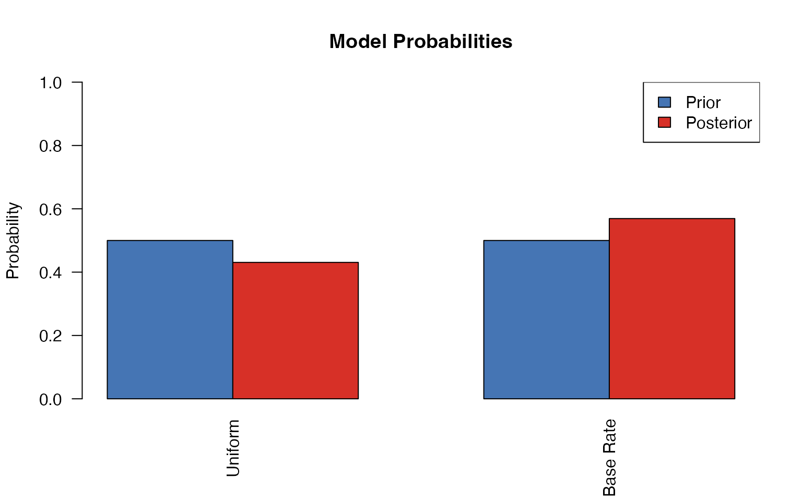
11.4 plot.bs_surprise_temporal()
plot(temporal_result, type = "cumulative", main = "Cumulative Surprise Over Time")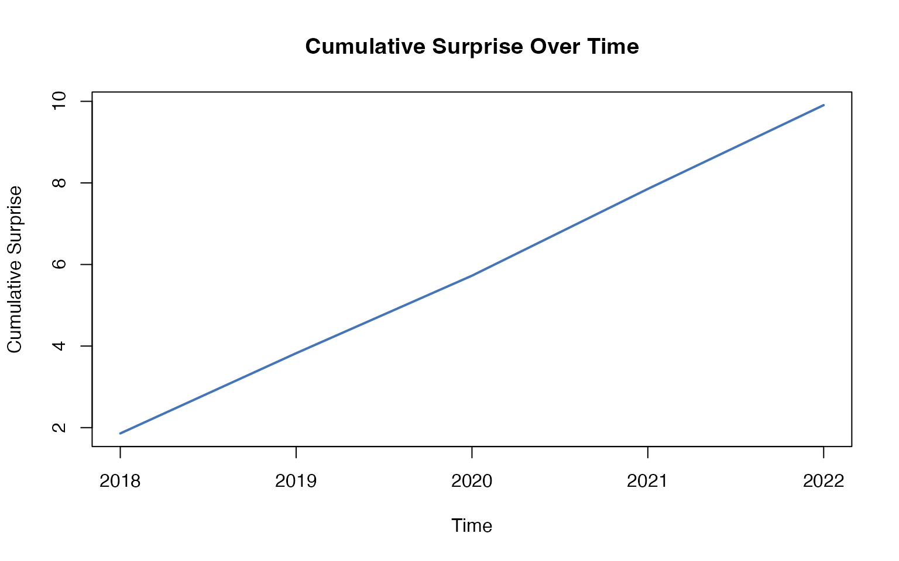
12. Summary Statistics
12.1 summary.bs_surprise()
result <- surprise(nc, observed = SID74, expected = BIR74)
summary(result)
#> AREA PERIMETER CNTY_ CNTY_ID
#> Min. :0.0420 Min. :0.999 Min. :1825 Min. :1825
#> 1st Qu.:0.0910 1st Qu.:1.324 1st Qu.:1902 1st Qu.:1902
#> Median :0.1205 Median :1.609 Median :1982 Median :1982
#> Mean :0.1263 Mean :1.673 Mean :1986 Mean :1986
#> 3rd Qu.:0.1542 3rd Qu.:1.859 3rd Qu.:2067 3rd Qu.:2067
#> Max. :0.2410 Max. :3.640 Max. :2241 Max. :2241
#> NAME FIPS FIPSNO CRESS_ID
#> Length:100 Length:100 Min. :37001 Min. : 1.00
#> Class :character Class :character 1st Qu.:37050 1st Qu.: 25.75
#> Mode :character Mode :character Median :37100 Median : 50.50
#> Mean :37100 Mean : 50.50
#> 3rd Qu.:37150 3rd Qu.: 75.25
#> Max. :37199 Max. :100.00
#> BIR74 SID74 NWBIR74 BIR79
#> Min. : 248 Min. : 0.00 Min. : 1.0 Min. : 319
#> 1st Qu.: 1077 1st Qu.: 2.00 1st Qu.: 190.0 1st Qu.: 1336
#> Median : 2180 Median : 4.00 Median : 697.5 Median : 2636
#> Mean : 3300 Mean : 6.67 Mean :1050.8 Mean : 4224
#> 3rd Qu.: 3936 3rd Qu.: 8.25 3rd Qu.:1168.5 3rd Qu.: 4889
#> Max. :21588 Max. :44.00 Max. :8027.0 Max. :30757
#> SID79 NWBIR79 geometry surprise
#> Min. : 0.00 Min. : 3.0 MULTIPOLYGON :100 Min. :0.03343
#> 1st Qu.: 2.00 1st Qu.: 250.5 epsg:4267 : 0 1st Qu.:0.22153
#> Median : 5.00 Median : 874.5 +proj=long...: 0 Median :0.31363
#> Mean : 8.36 Mean : 1352.8 Mean :0.32285
#> 3rd Qu.:10.25 3rd Qu.: 1406.8 3rd Qu.:0.43273
#> Max. :57.00 Max. :11631.0 Max. :0.60083
#> signed_surprise
#> Min. :-0.5834219
#> 1st Qu.:-0.2925958
#> Median :-0.1175466
#> Mean : 0.0001488
#> 3rd Qu.: 0.3426517
#> Max. : 0.600829513. Included Datasets
13.1 canada_mischief
data(canada_mischief, package = "bayesiansurprise")
cat("Canada mischief dataset:\n")
#> Canada mischief dataset:
cat("Rows:", nrow(canada_mischief), "\n")
#> Rows: 13
cat("Columns:", paste(names(canada_mischief), collapse = ", "), "\n")
#> Columns: name, population, mischief_count, rate_per_100k, pop_proportion, mischief_proportion
# Compute surprise on Canadian data
canada_result <- auto_surprise(
canada_mischief$mischief_count,
canada_mischief$population
)
cat("\nSurprise values by province:\n")
#>
#> Surprise values by province:
df_result <- data.frame(
province = canada_mischief$name,
surprise = round(canada_result$surprise, 4)
)
print(df_result[order(-df_result$surprise), ])
#> province surprise
#> 1 Ontario 0.6176
#> 2 Quebec 0.6019
#> 4 Alberta 0.5883
#> 3 British Columbia 0.5877
#> 13 Nunavut 0.5860
#> 7 Nova Scotia 0.5856
#> 8 New Brunswick 0.5855
#> 5 Manitoba 0.5853
#> 6 Saskatchewan 0.5851
#> 11 Northwest Territories 0.5851
#> 12 Yukon 0.5850
#> 10 Prince Edward Island 0.5543
#> 9 Newfoundland and Labrador 0.551613.2 example_counties
data(example_counties, package = "bayesiansurprise")
cat("Example counties dataset:\n")
#> Example counties dataset:
cat("Class:", class(example_counties)[1], "\n")
#> Class: data.frame
cat("Rows:", nrow(example_counties), "\n")
#> Rows: 50
cat("Columns:", paste(names(example_counties), collapse = ", "), "\n")
#> Columns: county_id, name, population, events, expected, is_hotspot, is_coldspotSession Info
sessionInfo()
#> R version 4.5.0 (2025-04-11)
#> Platform: aarch64-apple-darwin20
#> Running under: macOS Sequoia 15.4.1
#>
#> Matrix products: default
#> BLAS: /Library/Frameworks/R.framework/Versions/4.5-arm64/Resources/lib/libRblas.0.dylib
#> LAPACK: /Library/Frameworks/R.framework/Versions/4.5-arm64/Resources/lib/libRlapack.dylib; LAPACK version 3.12.1
#>
#> locale:
#> [1] C.UTF-8/C.UTF-8/C.UTF-8/C/C.UTF-8/C.UTF-8
#>
#> time zone: America/Los_Angeles
#> tzcode source: internal
#>
#> attached base packages:
#> [1] stats graphics grDevices utils datasets methods base
#>
#> other attached packages:
#> [1] ggplot2_4.0.1 sf_1.0-23 bayesiansurprise_0.1.0
#>
#> loaded via a namespace (and not attached):
#> [1] gtable_0.3.6 jsonlite_2.0.0 dplyr_1.1.4 compiler_4.5.0
#> [5] Rcpp_1.1.0 tidyselect_1.2.1 jquerylib_0.1.4 systemfonts_1.2.3
#> [9] scales_1.4.0 textshaping_1.0.1 yaml_2.3.10 fastmap_1.2.0
#> [13] R6_2.6.1 labeling_0.4.3 generics_0.1.4 classInt_0.4-11
#> [17] s2_1.1.9 knitr_1.50 htmlwidgets_1.6.4 MASS_7.3-65
#> [21] tibble_3.3.1 units_1.0-0 desc_1.4.3 DBI_1.2.3
#> [25] bslib_0.9.0 pillar_1.11.1 RColorBrewer_1.1-3 rlang_1.1.7
#> [29] cachem_1.1.0 xfun_0.52 fs_1.6.6 sass_0.4.10
#> [33] S7_0.2.1 viridisLite_0.4.2 cli_3.6.5 withr_3.0.2
#> [37] pkgdown_2.1.3 magrittr_2.0.4 wk_0.9.5 class_7.3-23
#> [41] digest_0.6.39 grid_4.5.0 lifecycle_1.0.5 vctrs_0.7.0
#> [45] KernSmooth_2.23-26 proxy_0.4-28 evaluate_1.0.4 glue_1.8.0
#> [49] farver_2.1.2 ragg_1.4.0 e1071_1.7-17 rmarkdown_2.29
#> [53] tools_4.5.0 pkgconfig_2.0.3 htmltools_0.5.8.1